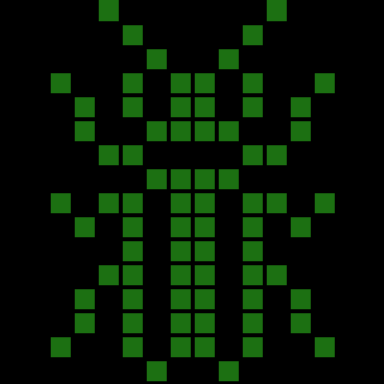
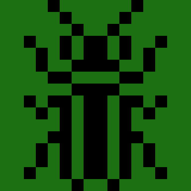

glider_v <- c(0,0,0,0,0, 0,0,1,0,0, 0,0,0,1,0, 0,1,1,1,0, 0,0,0,0,0)
glider_m <- matrix(glider_v, 5) # convert to matrix
glider_m <- glider_m[, ncol(glider_m):1] # reverse cols
par(mar = rep(0, 4)) # ensure no margins
image(glider_m) # plot ittl;dr
You can use R’s image() function to convert a matrix to a pixelly graphic.
Note
I’ve now written a little R package called {pixeltrix}, which lets you click on squares in a plot window to generate a matrix of ‘pixels’. This means you don’t have to type out any vectors by hand. You can read more in some other blog posts.
Pixel fixation
My last post was about the {emojiscape} package, which makes a little scene out of sampled emojis.
Following a similar approach, you could write a matrix by hand and plot it via the base function image(). Here’s a very basic example with a ‘glider’ from Conway’s Game of Life. Values of 0 are ‘dead’ cells and values of 1 are ‘live’.
Note that I input the vector values from what would become the top left to bottom right of the output matrix. The image() function doesn’t read them in this order, however, so I’ve added a step to reverse the column order so the plot output appears as I intended.
Also, image() normally outputs with labelled axes, but we can effectively hide those by minimising the margins par()ameter of the plot to 0.
Reprologoducibility
But really my motivation is to make a reproducible version of this blog’s logo: an insect composed of ‘pixels’ in a 16-by-16 square.
{kind=link}
So, I’ve hand-coded a binary vector of length 256 (i.e. 16 * 16). The 0s and 1s here represent background and insect pixels, respectively. I’ve used line breaks to make it easier to create and edit the vector manually.
Here’s the vector that represents the logo:
logo_v <- c(
0,0,0,0,1,0,0,0,0,0,0,1,0,0,0,0,
0,0,0,0,0,1,0,0,0,0,1,0,0,0,0,0,
0,0,0,0,0,0,1,0,0,1,0,0,0,0,0,0,
0,0,1,0,0,1,0,1,1,0,1,0,0,1,0,0,
0,0,0,1,0,1,0,1,1,0,1,0,1,0,0,0,
0,0,0,1,0,0,1,1,1,1,0,0,1,0,0,0,
0,0,0,0,1,1,0,0,0,0,1,1,0,0,0,0,
0,0,0,0,0,0,1,1,1,1,0,0,0,0,0,0,
0,0,1,0,1,1,0,1,1,0,1,1,0,1,0,0,
0,0,0,1,0,1,0,1,1,0,1,0,1,0,0,0,
0,0,0,0,0,1,0,1,1,0,1,0,0,0,0,0,
0,0,0,0,1,1,0,1,1,0,1,1,0,0,0,0,
0,0,0,1,0,1,0,1,1,0,1,0,1,0,0,0,
0,0,0,1,0,1,0,1,1,0,1,0,1,0,0,0,
0,0,1,0,0,1,0,1,1,0,1,0,0,1,0,0,
0,0,0,0,0,0,1,0,0,1,0,0,0,0,0,0
)I might as well make a (non-generic) function to matrixify (definitely a word) and plot the vector, so I can then tweak a few parameters as I please.
plot_logo <- function(
x = logo_v, # vector
px = 16, # width/length of output (square)
col_0 = "black", # colour for values of 0
col_1 = "#1e8016", # colour for values of 1
lwd = 8 # to separate the squares
) {
par(mar = rep(0, 4)) # set margins outside plot region
m <- matrix(x, px) # create a matrix from the vector
m <- m[, ncol(m):1] # reverse cols
image(m, col = c(col_0, col_1)) # plot matrix, colour by number
# If line width provided, draw lines between squares
if (!is.null(lwd)) {
px_half <- px * 2
s <- seq(-1 / px_half, 1 + (1 / px_half), 1 / (px - 1))
abline(h = s, v = s, col = col_0, lwd = lwd)
}
}Note that I added a line width argument (lwd). If specified, horizontal and vertical lines are drawn to give the impression that the squares are ‘separated’ from each other.
Here’s the logo.
plot_logo(lwd = 2)
And here’s what happens if we remove the lines and swap the colours, for example.
plot_logo(col_0 = "#1e8016", col_1 = "black", lwd = NULL)
And given it’s Pride Month:
for (i in rainbow(7)) {
plot_logo(lwd = 1, col_0 = "white", col_1 = i)
}Sprite delight
This approach is basically pixel-art-by-numbers, right?
So I’ve written and animated two frames of a classic videogame character, Link from The Legend of Zelda on the NES, using the {magick} package to create a gif.
There’s four colours in this one, so the vectors are no longer binary: there’s 0 for the background, 1 for green, 2 for skin and 3 for the darker spots.
The top part of the sprite doesn’t change between frames, but the bottom does. To avoid repetition, we can store the top part as a separate vector, then combine it with each frame’s lower section. It’s still a bit of a slog to input these by hand!
link_v_top <- c(
0,0,0,0,0,1,1,1,1,1,1,0,0,0,0,0,
0,0,0,0,1,1,1,1,1,1,1,1,0,0,0,0,
0,0,2,0,1,3,3,3,3,3,3,1,0,2,0,0,
0,0,2,0,3,3,3,3,3,3,3,3,0,2,0,0,
0,0,2,2,3,2,1,2,2,1,2,3,2,2,0,0,
0,0,2,2,3,2,3,2,2,3,2,3,2,2,0,0,
0,0,0,2,2,2,2,2,2,2,2,2,2,3,0,0
)
link_v_b1 <- c(
0,0,0,1,1,2,2,3,3,2,2,1,1,3,0,0,
0,3,3,3,3,3,2,2,2,2,1,1,3,3,3,0,
3,3,2,3,3,3,3,1,1,1,1,1,2,3,3,0,
3,2,2,2,3,3,2,3,3,1,1,2,2,2,3,0,
3,3,2,3,3,3,2,1,3,3,3,3,2,2,2,0,
3,3,2,3,3,3,2,3,3,1,1,1,1,2,0,0,
3,3,3,3,3,3,2,1,1,1,1,1,0,0,0,0,
0,2,2,2,2,2,3,0,0,3,3,3,0,0,0,0,
0,0,0,0,3,3,3,0,0,0,0,0,0,0,0,0
)
link_v_b2 <- c(
0,0,0,0,1,2,2,3,3,2,2,1,3,3,0,0,
0,0,3,3,3,3,3,2,2,2,1,1,1,2,0,0,
0,3,3,2,3,3,3,3,1,1,1,1,1,2,0,0,
0,3,2,2,2,3,3,2,3,3,1,1,3,0,0,0,
0,3,3,2,3,3,3,2,1,3,3,3,1,0,0,0,
0,3,3,2,3,3,3,2,3,3,1,1,1,0,0,0,
0,3,3,3,3,3,3,2,1,1,1,3,0,0,0,0,
0,0,2,2,2,2,2,0,0,3,3,3,0,0,0,0,
0,0,0,0,0,0,0,0,0,3,3,3,0,0,0,0
)
# Combine vectors to get frames
link_f1 <- c(link_v_top, link_v_b1)
link_f2 <- c(link_v_top, link_v_b2)Now we have the vectors representing Link for each frame of the animation. The approach now is like before: convert this to a 16 by 16 matrix and plot it. This time I’ve got a function that also saves the plots by first opening a png() graphics device and closing it at the end with dev.off(). I’ve saved these to a temporary directory for the purposes of the post, rather than my local disk.
tmp <- tempdir() # store temporary folder path
# Function to write frame to temporary folder
write_link <- function(vec) {
write_path <- file.path(tmp, paste0(substitute(vec), ".png"))
png(write_path, width = 160, height = 160)
link_m <- matrix(vec, 16)
link_m <- link_m[, ncol(link_m):1]
par(mar = rep(0, 4))
link_cols <- c("white", "#7bc702", "#cc8f2d", "#6c430a")
image(link_m, col = link_cols)
dev.off()
}
# Write the frames
write_link(link_f1); write_link(link_f2)quartz_off_screen
2 quartz_off_screen
2 We get a couple of messages to say that the devices have been closed, confirming the save.
Now we can use the {magick} package to create a gif: image_read() to load both PNG frames into a single object from their save location, and then image_animate() to combine the images into an output that flips between the two frames. You could also use image_write() to save this object to gif format.
# Generate a gif from the saved frames
png_paths <- list.files(tmp, "*.png$", full.names = TRUE) # get file paths
frames <- magick::image_read(png_paths) # load the files
magick::image_animate(frames, fps = 2, dispose = "previous") # combine frames
I’m not sure I’ll be coding the graphics for the whole game anytime soon…
Hip to be square
I’m not the first person to think or do this in R, I’m sure.
I did come across a really neato {pixelart} package and Shiny app by Florian Privé where you upload an image and it gets converted into a pixel form. As Florian said in his blogpost:
Kids and big kids can quickly become addicted to this
Yes. And that’s exactly why this post exists.
Let me know if you know of any more packages or whatever that do this sort of thing.
Note
Turns out that mikefc, aka coolbutuseless, (who else?) wrote a great blog post with a method for grabbing, plotting and animating sprites with the packages {png}, {raster}, {ggplot2} and {gganimate}. Slightly less painful than writing vectors by hand!
If you want to design your own sprites rather than copy others, try my little {pixeltrix} package for interactive pixel selection from a plot window, which returns a matrix.
Environment
Session info
Last rendered: 2023-07-21 19:29:29 BSTR version 4.3.1 (2023-06-16)
Platform: aarch64-apple-darwin20 (64-bit)
Running under: macOS Ventura 13.2.1
Matrix products: default
BLAS: /Library/Frameworks/R.framework/Versions/4.3-arm64/Resources/lib/libRblas.0.dylib
LAPACK: /Library/Frameworks/R.framework/Versions/4.3-arm64/Resources/lib/libRlapack.dylib; LAPACK version 3.11.0
locale:
[1] en_US.UTF-8/en_US.UTF-8/en_US.UTF-8/C/en_US.UTF-8/en_US.UTF-8
time zone: Europe/London
tzcode source: internal
attached base packages:
[1] stats graphics grDevices utils datasets methods base
loaded via a namespace (and not attached):
[1] digest_0.6.33 fastmap_1.1.1 xfun_0.39 fontawesome_0.5.1
[5] magrittr_2.0.3 knitr_1.43.1 htmltools_0.5.5 rmarkdown_2.23
[9] cli_3.6.1 compiler_4.3.1 rstudioapi_0.15.0 tools_4.3.1
[13] evaluate_0.21 Rcpp_1.0.11 yaml_2.3.7 magick_2.7.4
[17] rlang_1.1.1 jsonlite_1.8.7 htmlwidgets_1.6.2Reuse
CC BY-NC-SA 4.0